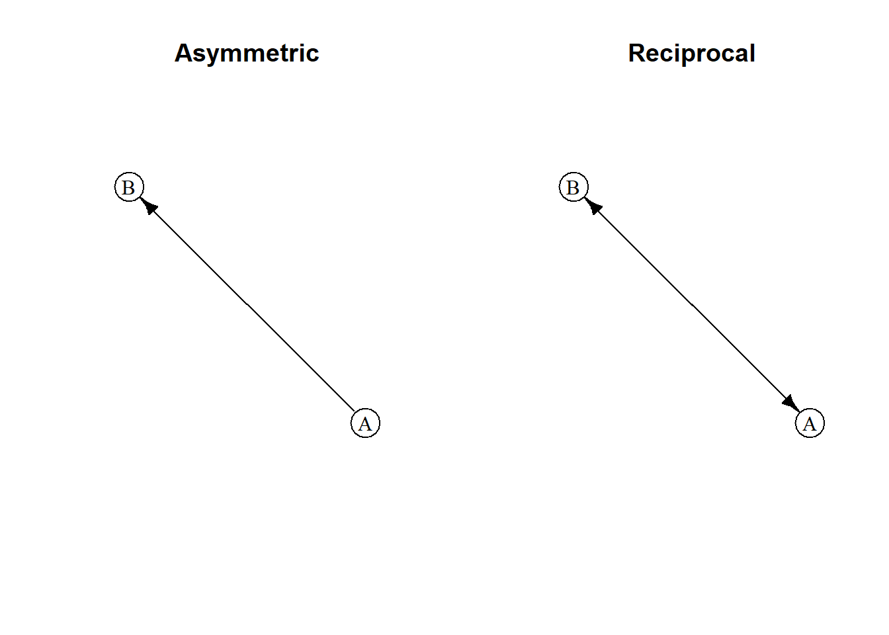
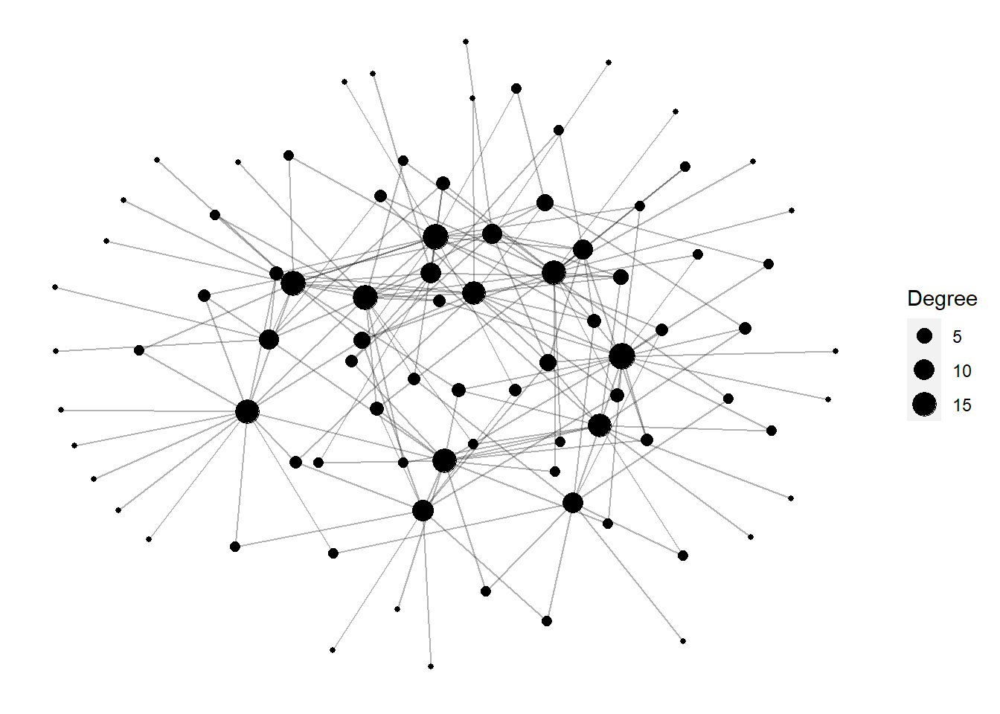
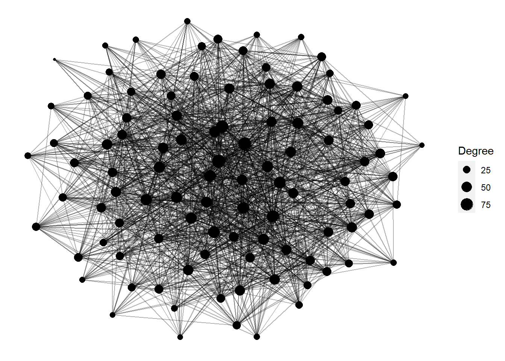

Humans around the globe regularly exchange labor with one another over time. One reason that labor exchange is widespread is because it enables an efficient economy of scale for task completion.
A common form of labor exchange is when one individual – we’ll call him ego – solicits the other individuals within his social network – his alters – for help with a task at a specific point in time. Many social theorists believe that this prosocial practice is driven by reciprocity: if you help me today, I will help you tomorrow.
Anthropologists who study labor exchange use a variety of techniques to document this social process. One approach is to ask every person in a community who they would recruit should they need to complete a task. This question poses a hypothetical labor exchange and the responses to can be compiled to create a perceived social network.
We can think about reciprocity in a perceived network as mutual nominations. In other words, person A said they would person B, and vice versa.

In abstract, we could study patterns of labor reciprocity by simulating networks of varying density that have different rates of reciprocity. This would be simple to do using the simulate function within statnet.
library(statnet)
fake <- simulate(network(100, density=0.01) ~ edges + mutual, coef=c(-4,4), seed = 7)Figure 1: A synthetic network with 100 nodes and a density of 0.018. Edges color black indicate reciprocity.
But in reality, not every perceived partner wgo gets nominated by someone in a survey will actually show up to help. This means that the perceived social network likely differs from the realized network of labor exchange. To study these networks, anthropologists use participant observation and contact diaries to keep track of who helps who.
When labor exchanges are documented using ethnography, they come closer to the realized network. This is because an anthropologist can actually join the task and observe who shows up each time. To study such a network in silico, we need a different generative process. Likewise, when a contact diary (i.e., work log) is used, only a subset of individuals and their exchanges are tracked. This provides a narrower albeit more realistic window into the nature of labor exchange. And like ethnography, it requires a different kind of generative model if we want to study it synthetically.
Focusing on the ethnography approach, we desire a model that generates multiple events. Each event is “owned” by a single person, ego, who receive help from a pool of N individuals. We start by setting some parameters and sampling an ego at random.
set.seed(2)
# how many people?
N <- 6
id <- 1:N
# choose an ego
ego <- sample(id, 1)Next we need to sample a set of alters from the pool of individual -ego. How should we determine the size of the group? There may be more ethnographic reasons that determine size, but for now we will draw a number from a binomial distribution with a size that is equal to N-1 and 0.5 probability.
# generate some alters
alt <- sample(id[-ego], size = rbinom(1, length(id)-1, prob = 0.5))Now that we have our helpers, let’s cobble them together in a data.frame.
e <- expand.grid(ego, alt)
e## Var1 Var2
## 1 5 1
## 2 5 6
## 3 5 4In order to build some reciprocity into the model, we need to sample a new_ego and check if he was in the previous group e. Later, we will iterate this process with a for loop, but for now I’ll show it in steps.
# at the next iteration, draw another ego
new_ego <- sample(id, 1)
# check if ego was present at the last exchange
new_ego %in% e[,2]## [1] TRUESince new_ego was present at the last event, let’s store the row from e that contains the pair, but in reverse order so that it will match the new labor group structure.
# if so, save the row in the reverse order
if( (new_ego %in% e[,2]) == T ) {
temp <- e[ e$Var2 == new_ego, 2:1]
}
colnames(temp) <- c('Var1','Var2')
temp## Var1 Var2
## 3 4 5Now we can generate another set of alters and bind our the new_ego row in temp to it at the bottom.
# create another set of alters and bind temp to it
next_alt <- sample(id[-new_ego], size = rbinom(1, length(id)-1, prob = 0.5))
f <- expand.grid(new_ego, next_alt)
f <- rbind(f, temp)
f## Var1 Var2
## 1 4 1
## 2 4 2
## 3 4 3
## 31 4 5If we repeat this process over and over, then we will generate a set of labor exchanges where an individual who was present at the previous event is more likely to occur in the next one, if and only if that person is the owner of the next event. In future developments of this model, we will make the reciprocity algorithm more sophisticated by searching more of the labor exchange history.
For now, we’ll embed all of this in a large function called labor.recip.
labor.recip <- function(N, layers, seed=7, p_group=0.5) {
# set some initial parameters
set.seed(seed=seed)
L <- list()
id <- 1:N
# choose 1st ego
ego <- sample(id, 1)
# generate some alters
alt <- sample(id[-ego], size = rbinom(1, length(id)-1, prob = p_group))
# expand and add event id
e <- expand.grid(ego, alt)
e$eid <- 1
L[[1]] <- e
# loop through and make exchanges
for(k in 2:layers) {
# choose new ego
new_ego <- sample(id, 1)
# check if new_ego is in previous layer
if( (new_ego %in% L[[k-1]][,2]) == T ) {
# paste into L
temp <- L[[k-1]][ L[[k-1]]$Var2 == new_ego, 2:1]
temp$eid <- k
colnames(temp) <- c('Var1','Var2','eid')
# generate another group of alters
new_alt <- sample(id[-new_ego], size = rbinom(1, length(id)-1, prob = p_group))
f <- expand.grid(new_ego, new_alt)
f$eid <- k
f2 <- rbind( f, temp)
L[[k]] <- f2[ !duplicated(f2), ]
} else {
# no temp object
new_alt <- sample(id[-new_ego], size = rbinom(1, length(id)-1, prob = p_group))
g <- expand.grid(new_ego, new_alt)
g$eid <- k
L[[k]] <- g[ !duplicated(g), ]
}
}
return(L)
}Some things to note about this function.
L.layers.eid that is stored at each iteration.if else statement that checks if a new_ego is present. This is the part of the function that will get more development.duplicated function in base R is used to deal with this.Let’s test it out. Our key parameters are the following:
N: the number of individuals/nodes.layers: how many time steps into the future?seed: for reproducible examples (default = 7).p__group: the probability used to determine the size of the labor group. Note that if p is ~1, then everyone will show up to every labor event.E <- labor.recip(N=100, layers = 16, p_group = 0.1)
head(E, 3)## [[1]]
## Var1 Var2 eid
## 1 42 31 1
## 2 42 93 1
## 3 42 67 1
## 4 42 15 1
## 5 42 91 1
## 6 42 8 1
## 7 42 68 1
## 8 42 89 1
## 9 42 40 1
##
## [[2]]
## Var1 Var2 eid
## 1 22 8 2
## 2 22 60 2
## 3 22 91 2
## 4 22 12 2
## 5 22 52 2
## 6 22 20 2
##
## [[3]]
## Var1 Var2 eid
## 1 40 31 3
## 2 40 80 3
## 3 40 6 3
## 4 40 16 3
## 5 40 22 3
## 6 40 60 3
## 7 40 21 3
## 8 40 4 3
## 9 40 11 3
## 10 40 26 3
## 11 40 88 3
## 12 40 2 3
## 13 40 38 3
## 14 40 44 3As you can see, the output is a list of data frames that contain our labor groups. These are much like the work logs we’ve collected in the field. We can certainly aggregate them all and then plot the aggregate network.

Next we will try a network that is much larger.
E <- labor.recip(N=100, layers = 200, p_group = 0.1)
That is all for now. Next we will make this algorithm much more sophisticated and generate networks based on only a few sampling nodes.